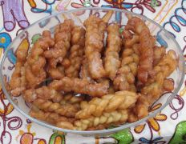

Afri-foods
1. SOUTH AFRICAN MELKTERT (MILKTART)
"This is a wonderfully thick and flavourful milk custard set in a crust. A traditional tart which is loved by young and old alike. Children especially love the filling as a dessert."
2. KOEKSISTERS (SOUTH AFRICAN SYRUP-SOAKED FRITTERS)
"This recipe was given to me by my South African cousin a long, long time ago. They are delicious little fritters (atleast the way she makes them) that are soaked in a spicy syrup. We have them with tea."

3. SOUTH AFRICA VEGETABLE CURRY
"I'm not sure where this recipe came from but it is very good. Serve with brown rice. Can also top with shredded coconut and chutney."